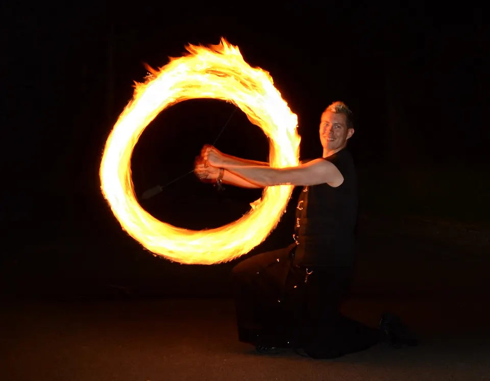
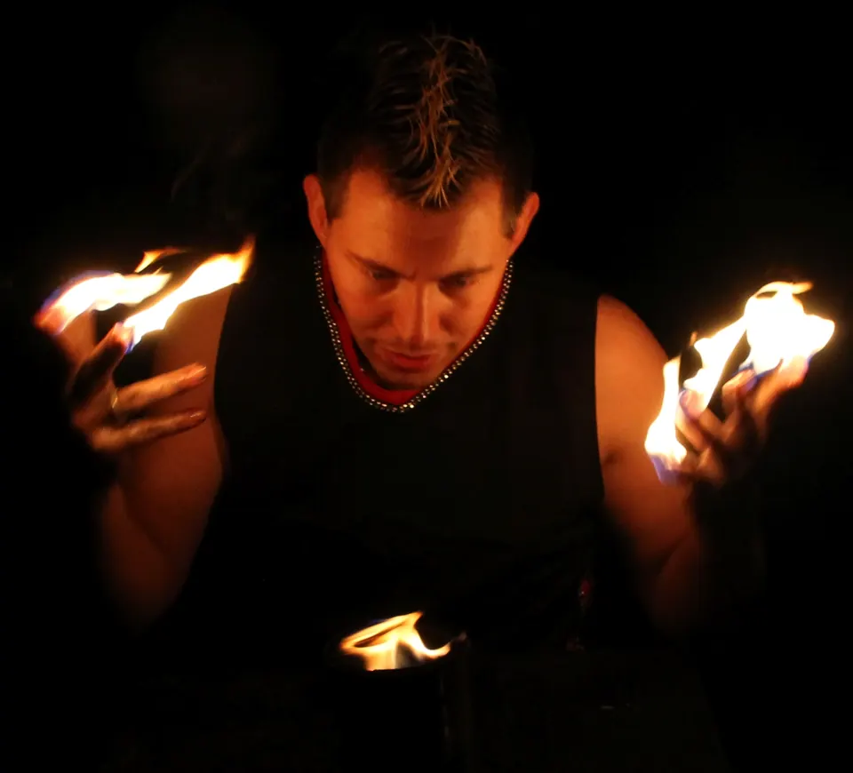
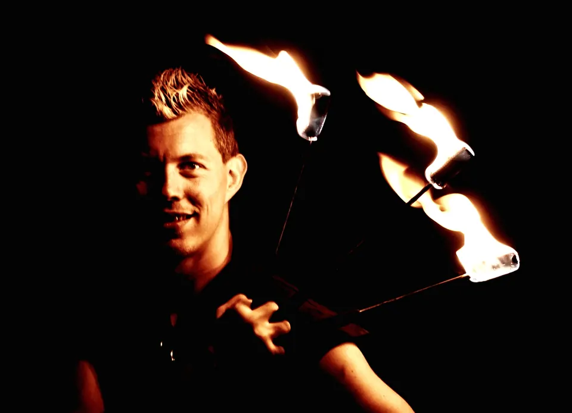
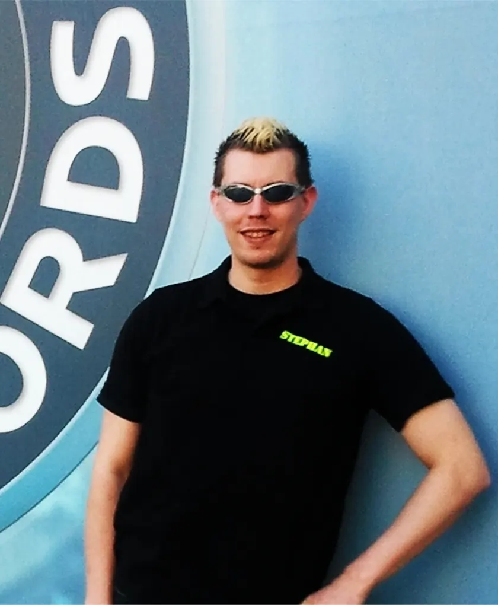
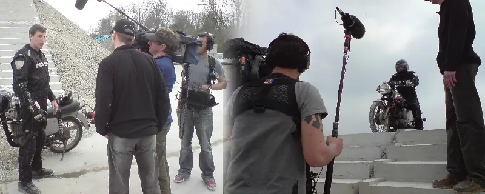
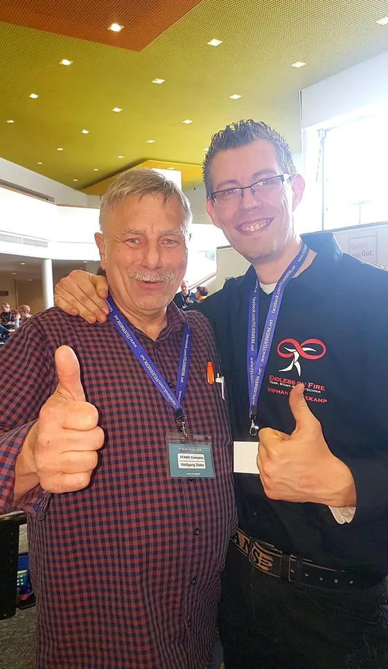

Start/Über mich
Stephan Reuvekamp.
Industriemechaniker, staatlich geprüfter Techniker und zertifizierter CATIA-Konstrukteur. Dazu Pyrotechniker, Stuntman und Feuerkünstler. Gründer von Projekt 1024 in Lienen, NRW: Mit Inklusion zur Fusion!!!

01 Über mich
Ich bin Autodidakt und unabhängiger Forscher mit ADHS im autistischen Spektrum. Ich verbinde praktische Erfahrung mit analytischer Fähigkeit, und ich will die Welt verändern, indem ich Menschen die richtigen Werkzeuge an die Hand gebe, um selbst zum Entdecker zu werden.
1 · Entwicklung & KonstruktionProduktentwicklung, CAD, Renderings und Animationen, 3D-Druck für Prototyping, Kontrolle und Wartung von Fitnessgeräten und Multisportanlagen.
2 · Dynamik & EventserviceFeuershows und Feuerwerke für Privatkunden und Unternehmen.
3 · Kognitive & soziale ArchitekturCoaching für Neurodivergenz in Betrieben, Organisationen und auf Großveranstaltungen.
02 Werdegang
Beruf, Ausbildung und Zertifikate.
Berufliche Stationen und Qualifikationen, neueste zuerst.
seit 2026
Gründer, Projekt 1024Selbstständig · Lienen, NRW · seit Aug. 2026 · Entwicklung & Konstruktion, Dynamik & Eventservice, Kognitive & soziale Architektur
Unternehmenca. 2024
Sachkunde Fitnessgeräte & MultisportanlagenTÜV Rheinland, Weiterbildung über TOLYMP: Kontrolle und Wartung von Fitnessgeräten und Multisportanlagen für den Außenbereich
Sicherheit2023–2026
Projektkoordinator TechnikTOLYMP GmbH, Outdoor-Fitnessgeräte, Hasbergen · Jan. 2023 – Jul. 2026 · Prozessoptimierung, 3D-Visualisierung · Mitarbeit am 3D-Planer (BSFZ-Siegel 2026): 3D-Modelle, Renderings, Montagezeichnungen, Datenpflege
Berufseit 2022
Wartungstechniker (Teilzeit)KGT Klima + Gebäude Technik, Ibbenbüren · seit Apr. 2022
Beruf2019–2023
Konstrukteur MetallbauMetallbau Lienesch GmbH & Co. KG, Ibbenbüren · März 2019 – Jan. 2023 · Stahltüren und Treppen
Beruf2019
Siemens NXWeiterbildung
CADCATIA V5 FlächenmodellierungWeiterbildung
CAD2018
Staatlich geprüfter Techniker MaschinenbautechnikDQR-Niveau 6, mit drei Abschlussarbeiten
AbschlussCATIA V5 Mechanical Designer SpecialistDassault Systèmes, dazu Associate Part & Assembly Design
CADAutodesk Inventor Community Contest2. Platz
Auszeichnung2017
DGQ-Qualitätsassistent TechnikDeutsche Gesellschaft für Qualität
Qualität2016
Industriemechaniker / MontageAccanto Personalmanagement, Münster · Mai – Aug. 2016
Beruf2013–2015
MAG-Schweißer / Schweißroboter-BedienerMBH Maschinenbau & Blechtechnik, Hörstel · Feb. 2013 – Sep. 2015
Beruf2011–2012
ElektromonteurKundtmann Elektrotechnik, Düren · Jul. 2011 – Nov. 2012
BerufStuntman-Ausbildung, einjährigAction Movie Film & Stuntteam, Stuntschule Mendig, 2011
BühneEignungsfeststellung Existenzgründer2011
Unternehmen2010
Sonderlehrgang PyrotechnikStaatlich anerkannt, Hummig Effects Pyrotechnikerschule, Kochel
BühneActionfahrtrainingAction Movie Film & Stuntteam, Mendig
Bühneseit 2008
Feuerkünstler und Customhersteller, Endless on FireSelbstständig · Ibbenbüren · seit März 2008
UnternehmenBühnenpyrotechnikerStaatlich anerkannter Lehrgang, Hummig Effects Pyrotechnikerschule, Kochel, 2008
Bühne2005–2010
Industriemechaniker / LaserschneidanwenderVKS Industriemontagen, Düren · März 2005 – Okt. 2010
Beruf2004
IndustriemechanikerKMS Stoßdämpfer, Düren · März – Dez. 2004
BerufIndustriemechaniker Maschinen- und SystemtechnikIHK-Abschluss
AbschlussFeuerwehrmannGrundausbildung
Sicherheit2001
AMADA LaseranwendungstrainingLaserbearbeitung Jahr wird geprüft
Fertigung03 Bühne & Film
Vor Publikum und Kamera.
Feuershows, Stunts und Mitwirkung an TV-Produktionen.

Mit Fackeln
Feuershow

Mit Feuerfächern
Feuershow

Porträt

Dreharbeiten
Mit TV-Team
Referenzen
Film & TV
- GalileoProSieben · Mitwirkung an mehreren Produktionen
- Taxi Taxi (Mythen-Fakecheck)Kabel eins · Dreharbeiten ca. 2011
- Abenteuer LebenKabel eins · Mitwirkung
- ExplosivRTL · Mitwirkung
 Lo Show dei Record (Guinness World Records)Canale 5, Rom · Mitwirkung
Lo Show dei Record (Guinness World Records)Canale 5, Rom · Mitwirkung- CSI: KowelenzKinofilm · Stuntdouble und Special Effects Coordinator
Live & Events
 Sansibar SyltFeuershow
Sansibar SyltFeuershow DschungelnächteZoo Osnabrück · dazu Halloween im Zoo, 2014
DschungelnächteZoo Osnabrück · dazu Halloween im Zoo, 2014 Ibb on IceIbbenbüren · Feuershow auf der Eisbahn
Ibb on IceIbbenbüren · Feuershow auf der Eisbahn Frühlingserwachen WallenhorstFeuershow bei den Wallenhorster Aktionstagen
Frühlingserwachen WallenhorstFeuershow bei den Wallenhorster Aktionstagen Hochzeitsmesse LeugermannIbbenbüren · Messestand Endless on Fire
Hochzeitsmesse LeugermannIbbenbüren · Messestand Endless on Fire- Feuershow Gut ErpenbeckFeuershow
- Stadt OsnabrückAuftritt
Theater
- Theater Querbeet IbbenbürenRolle Richard Pommeroy in „Miss Sophies Erbe“
Qualifikationen · Stunt & Pyrotechnik
- Stuntman-Ausbildung, einjährigAction Movie Film & Stuntteam, Stuntschule Mendig · 2011
- ActionfahrtrainingAction Movie Film & Stuntteam, Mendig · 2010
- Bühnenpyrotechniker, staatlich anerkannter LehrgangHummig Effects Pyrotechnikerschule, Kochel · 2008
- Sonderlehrgang Pyrotechnik, staatlich anerkanntHummig Effects Pyrotechnikerschule, Kochel · 2010
Partner & Kooperationen
- STABE! Company ↗Wolfgang & Katharina Stabe. Pyrotechnik-Hersteller seit 1983, Made in Germany: Feuerwerk, Pyrotechnik und Effekte für Film und Bühne. Gemeinsame Feuerwerke und Abbrennplätze.
- Pyroforum ↗Fachtreffen der Pyrotechnik-Branche, gemeinsam mit STABE! Company vor Ort.

04 Videos
Bewegt gezeigt.
Feuershow, Produktanimation und CAD-Präsentation. Die Videos laden erst nach Klick.
Anfrage
Lernen wir uns kennen.
TelefonNummer folgtPlatzhalter
Das hilft für ein Angebot
- Worum geht es?
- Zeitrahmen
- Ort